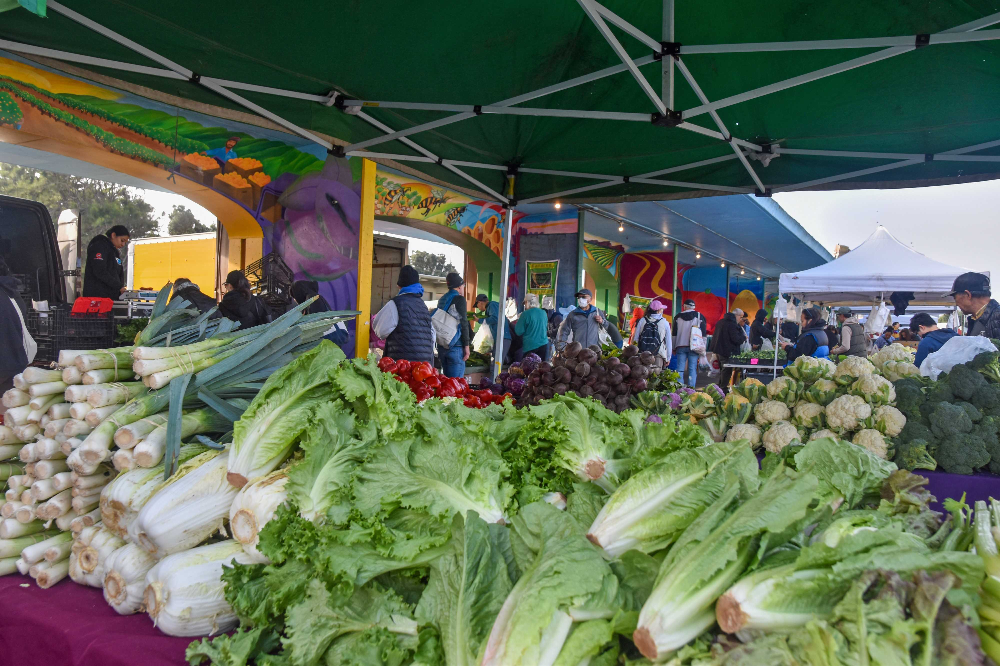
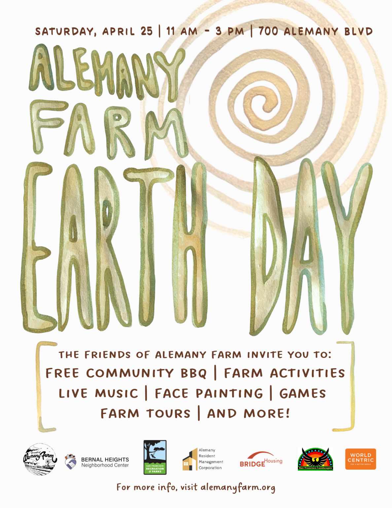

April 25, 2026
Earth Day Celebration
Alemany Farm's 19th Annual Earth Day Celebration is listed for Saturday, April 25, 2026 from 11 am to 3 pm with planting, tours, live music, food, family activities, and community groups.
Recent updates and public events show how the farm brings people together through seasonal celebrations, classes, and workdays.

April 25, 2026
Alemany Farm's 19th Annual Earth Day Celebration is listed for Saturday, April 25, 2026 from 11 am to 3 pm with planting, tours, live music, food, family activities, and community groups.
February 1, 2026
A seasonal update highlighted winter fruit tree pruning and water gardening workshops and directed visitors to the workshops page for details.
October 25, 2025
The 20th Annual Harvest Festival featured garlic planting, farm tours, family activities, food, music, and community partners.

Farm events often include tours, planting activities, workshops, music, food, and family-friendly programs.
Guests are often encouraged to use public transit during large events because on-site parking is limited.